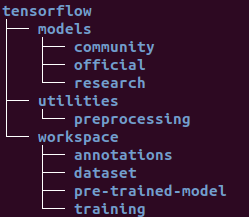

In this article I am going to describe how you can train one of the pre-trained models available on tensorflow model zoo to detect and identify items of your choice. There are some pre-requisites that you need to have like some software and library installations. These have been described in detail in an earlier tutorial about performing object detections using a pre-trained model and TensorFlow Object-Detection-API. The link to that article is here.
One thing that I did not cover in the earlier article was the tool LabelImg. This is a very handy piece of software which is used for annotating images i.e. we can use it to draw bounding boxes around the objects that we need to be detected by our detector in this software and it generates an xml file with the co-ordinates of the box corresponding to each image in the dataset. The tool is opensource and is available on this github repo
To install the tool simply run the following command in terminal
(tfenv) (base) ... $ pip install labelImg
So lets start preping the workspace and get this thing done.
STEP-1: Setting up the workspace: From the last article we should already have a partial workspace setup, with a parent folder "ObjectDetection" and a sub-folder named "tensorflow" containing the clone of the tf-models in the folder named "models". The following image shows the final directory structure that I am going to be using throughout this article. 
Once this is done go ahead and find these two scripts in the directory ../tensorflow/models/research/object_detection/
- model_main.py
- export_inference_graph.py
These scripts will be used later on, for convenience copy these to ../tensorflow/workspace/
STEP-2: Preparing the dataset:
....2.1: Annotating the images:At this point I assume that you already have your data-set images in a directory all ready to be annotated. So go on ahead and fire up labelImg
(tfenv) (base) ... $ labelImg
Click on Open Dir and point to the directory containing the your dataset. You should see the File List view gets populated with the links to the images in the selected directory. Now all you have to do is iterate through all of the images and draw bounding boxes around the objects that you want to be detected on all of these images. Some handy key-board shortcuts for labelImg are:
w: Draw bounding box.
a: Iterate one step back in the files-list.
d: Iterate one step forward in the files-list.
This process can take up a lot of time, so I will leave you guys to it. See ya'all on the other side...
....2.2: Partitioning Into Test & Train Sets: Commonly a data set is not used in its entirety for just training, rather it is divided (90/10 commonly but you can use any ratio you want theoretically) into training and testing datasets. Now there are several open-source scripts and tools available for doing this partitioning, but I just do it manually. I will try to write a script my-self later and post it here when I get the time.
Create two directories named test and train inside ../workspace/dataset/ directory, and partition your data-set e.g. if you have 1000 images take a 100 and put them in the test directory and the rest 900 in the train directory along with their .xml files containing the metadata for annotations.
STEP-3: Label-Map: The label-map file maps each label in your data-set to an integer value and is required for both the training and detection process. The format of the file is very simple and the extention of the file must be .pbtxt. Navigate to the ../tensorflow/workspace/annotations/ directory and create a file with the name label_map.pbtxt the contents of the file and the command I use on linux to create it are in the following block:
# To create the labelmap, cd to the directory and execute the command:
(tfenv) (base) ... $ gedit label_map.pbtxt
############################################
# For two detection classes the contents of the file should look like this:
item {
id: 1
name: 'Crosswalk'
}
STEP-4: Tensorflow Records: The .xml files generated in step 2.1 containing the metadata for bounding boxes have to be unified in a single file and converted to a format compatible with tensor flow *.record. I am going to be using scripts developed by Lyudmil Vladimirov, and available on his github-repo.
I have also placed these scripts and other files, including the data-set I used for training, on this repository for convenience.
.... 4.1: At this point you should have two scripts named generate_tfrecord.py and xml_to_csv.py in the directoy ../tensorflow/utilities/ (and also the script check_for_rgb.py if you cloned my repo). Cd into the utilities directory in the terminal and run the following commands to generate the *.record file for the training data:
# Unify .xml files and convert to .csv
../tensorflow/utilities$ python xml_to_csv.py -i [path_to_training_dataset]
-o [path_to_annotations_dir]/train_labels.csv
Convert from .csv to .record
python generate_tfrecord.py --label=[label]
--csv_input=[path_to_annotations_dir]/train_labels.csv
--img_path=[path_to_training_dataset]
--output_path=[path_to_annotations_dir]/train.record
.... 4.2: Now we shall repeat the same steps for the test data, the only difference will be the paths.
# Unify .xml files and convert to .csv
../tensorflow/utilities$ python xml_to_csv.py -i [path_to_test_dataset]
-o [path_to_annotations_dir]/test_labels.csv
Convert from .csv to .record
python generate_tfrecord.py --label=[label]
--csv_input=[path_to_annotations_dir]/test_labels.csv
--img_path=[path_to_test_dataset]
--output_path=[path_to_annotations_dir]/test.record
If the above steps are executed properly you should have four new files in tensorflow/workspace/annotations/ named test.record, train.record, train_labels.csv and test_labels.csv.
STEP-5: Adapting the model's *.config file: In this article we are basically employing the principles of transfer learning. Which means we are going to be reusing one of the pre-built, pre-trained models and retrain it to identify the objects of our choosing. We can go ahead and design our very own model from scratch but that is a problem for another time & another article. A variety of pre-trained models are available at Tensorflow detection model zoo. You can go ahead and browse for a model of your choice, for the tutorial I am going to use ssd_inception_v2_coco.
Once you have downloaded the model file, extract it to the ../tensorflow/workspace/pre-trained-model/ directory. You should now have multiple files and one directory there. One of these files shall be pipeline.config.Please take note that the .config file that came with the modelcasued some errors in the training process. The issue has been fixed in a later version of the config file. You can get the new config file directly from here. To adapt the pipeline to our problem, we will need to make some changes to this file. You can go through the file and get familiar with the contents of the file. I am going to be describing the lines that will need to be changed:
Make a copy of the pipeline.config file in ../tensorflow/workspace/training/ directory and make the following changes to it.
# Unify .xml files and convert to .csv
model {
ssd {
num_classes: 1#Set this tag to the number of classes in your problem.
.... ....
feature_extractor {
type: 'ssd_inception_v2'#Put the name of your chosen model for this tag.
.... ....
fine_tune_checkpoint: "pre-trained-model/model.ckpt"#Path to the pre-trained model
from_detection_checkpoint: true
num_steps: 100#Set to the required number of training iterations
.... ....
train_input_reader: {
tf_record_input_reader {
input_path: "annotations/train.record"#Path to .record file for training data
}
label_map_path: "annotations/label_map.pbtxt"#Path to train label map file
}
.... ....
eval_config: {
num_examples: 8000# Optional for evaluation.
.... .....
eval_input_reader: {
tf_record_input_reader {
input_path: "annotations/test.record"#Path to .record file for test data
}
label_map_path: "annotations/label_map.pbtxt"#Path to test label map file
shuffle: false
num_readers: 1
}
In the above code snippet the tags with green font are the values you will need to adapt to the problem that you are trying to solve. So go ahead and find these tags with in the pipeline.config file and change it to the desired values now.
STEP-6: Starting the training job: Behold the moment of truth! now we are ready to start the training job. Run the following command to start the training process. If every thing is setup correctly, the training process will begin and you will have some time to chill out untill it completes depending on the size of your data set and the number of iterations you set in step-5 this could take a while.
python model_main.py --alsologtostderr --model_dir=training/
--pipeline_config_path=training/pipeline.config
Once the training process has begun successfuly youd should see some debug prints on the terminal and something like this at the start of the process:
INFO:tensorflow:loss = 14.582134, step = 1
I0509 21:36:04.911955 140342495471424 basic_session_run_hooks.py:262]
loss = 14.582134, step = 1
STEP-7: Moitoring the training process: For monitoring the training process and several metrics e.g. training loss etc. tensorflow has this nifty tool called tensorboard. to access it simply start a new terminal activate the correct virtual environment cd to /tensorflow/workspace/ run the follwoing command. the terminal will show you the link to access the tensorboard in a browser once it initializes.
tensorboard --logdir=training\
STEP-7: Exporting the trained inference graph: Once the training process is complete, we need to extract the new inference graph. This will be used to perform detections of the object you trained the model on later on. This can be done as follows:
python export_inference_graph.py --input_type image_tensor
--pipeline_config_path training/pipeline.config
--trained_checkpoint_prefix training/model.ckpt-100
--output_directory trained-inference-graphs/inference_graph_v1.pb
STEP-8: Detect away using the new inference graph: Now you are ready to use the newly trained model to perform detections on still images and videos. Piece of cake right?
I will post a script in the repository that uses the model to perform detections, you can refer to it to get an idea how that can be done. This is it for now, I hope this helped you in some way, thanks for sticking around... until next time, ciao!
* ------ * ------ * ------ *